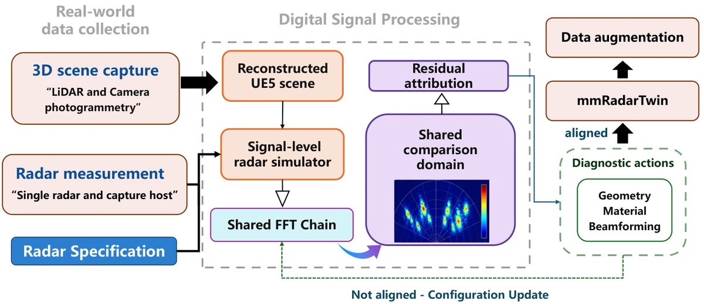

mmRadarTwin: A Measurement-Calibrated Signal-Level Digital Twin Platform for Indoor mmWave Radar
arXiv preprint · 2026
mmRadarTwin connects real radar measurements with an Unreal Engine simulation through a common signal processing interface. It records the simulated propagation paths behind individual returns, allowing researchers to diagnose differences between measured and simulated responses and generate controlled data for indoor sensing.